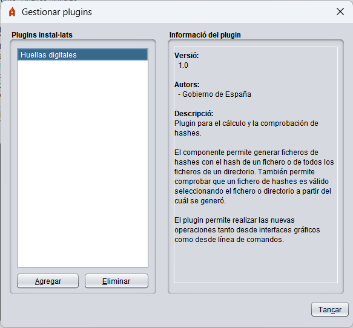

Autofirma integra un sistema senzill de plugins que permet als usuaris integrar en els seus processos de signatura plugins desenvolupats per ells mateixos o per tercers. Estos plugins permeten integrar un preproceso de les dades abans de signar, un postproceso després de la signatura i diferents operacions deslligades del procés de signatura però que poden tindre com a entrada les dades carregades per l'usuari, la signatura generada, els certificats utilitzats per a signar o els propis certificats continguts en les signatures. Estos processos només actuen sobre les operacions de signatura i signatura massiva realitzades a través de la interfície d'Autofirma. No apliquen a les signatures sol·licitades des d'un navegador web o a través de línia de comandos.
NOTA: Algunes funcionalitats anteriorment integrades en Autofirma, com el càlcul i la comprovació d'hashes, es distribuïxen ara en forma de plugins. Per a tindre accés a estes funcions des de la interfície gràfica d'Autofirma, el menú contextual del sistema operatiu o línia de comandos serà necessari instal·lar estos plugins.
Per a gestionar els plugins instal·lats en Autofirma, accedisca al panell de gestió a través de l'opció "Eines" → "Gestionar plugins" en la barra de menú de l'aplicació. Des d'este panell podrà instal·lar, desinstal·lar, configurar i consultar la informació dels plugins.

En este requadro es mostra un llistat amb els plugins instal·lats actualment en Autofirma. Pot polsar el botó "Agregar" de la part inferior del llistat per a instal·lar un nou plugin o al botó "Eliminar" per a desinstal·lar el plugin seleccionat en el llistat. La instal·lació i desinstal·lació de plugins té efecte immediat. En seleccionar un plugin del llistat, es mostrarà la informació del mateix en el panell "Informació del plugin".
En este panell es mostra la informació del plugin seleccionat en el llistat "Plugins instal·lats". Esta informació compta amb el número de versió del plugin, els autors, la informació de contacte i una descripció. Alguns d'estes dades poden ometre's si el plugin no informa d'ells.
Opcionalment, si el plugin el permet, pot aparéixer un botó "Configurar" en la zona inferior del panell. Este botó obri el diàleg de configuració definit pel propi plugin. Si un plugin no admet configuració, no apareixerà este botó.
Els plugins poden definir certs permisos i fer diverses tasques per a la seua instal·lació i desinstal·lació. És possible que alguns plugins no tinguen efecte fins que es reinicie l'aplicació.